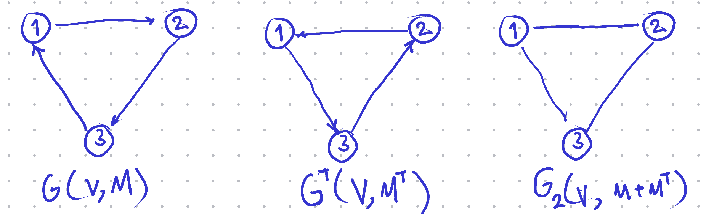
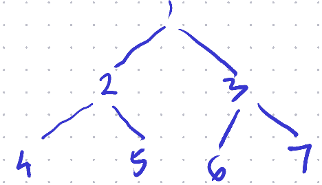
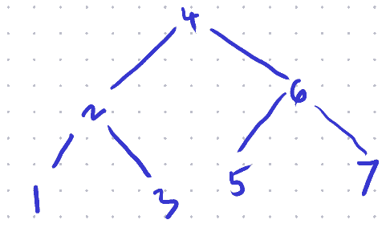
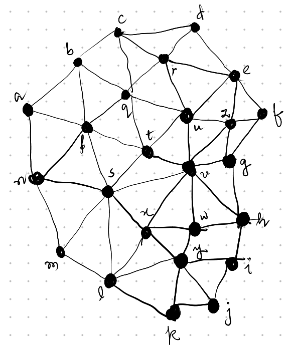
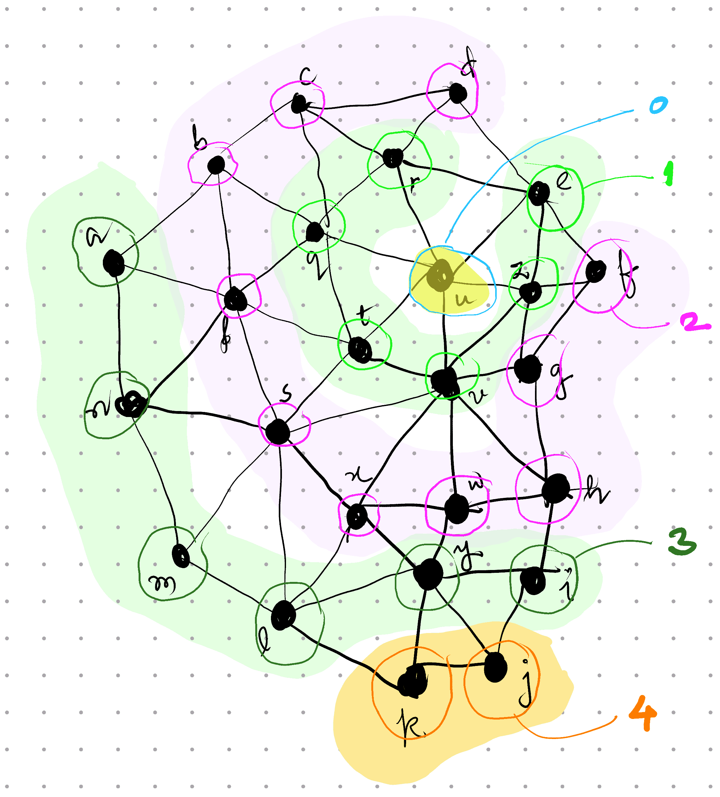
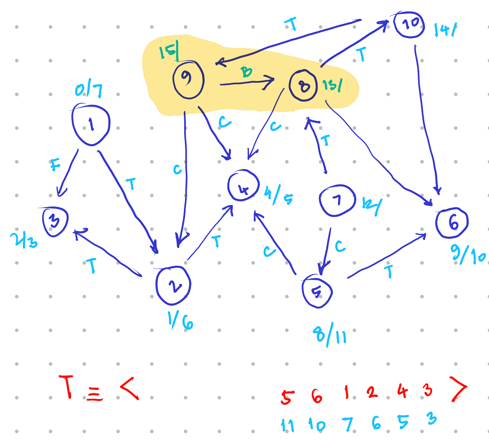
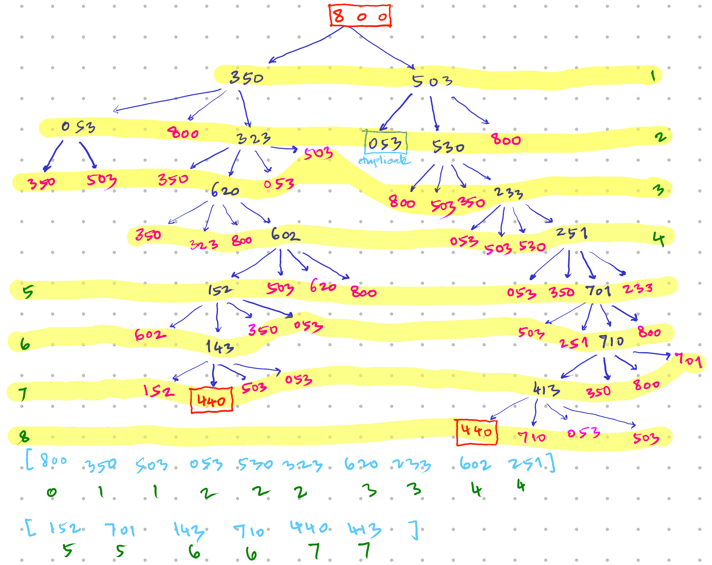

Graph theory
Graph Representations
Fundamentals
(See slides)
Question 1
Are graphs useful in real world? Support your answer with examples from your domain.
Question 2
What is the difference between adjacency list and adjacency matrix? Cite real world examples of usage.
Hint: List is compact, whereas Matrix is detailed. List makes more sense in sparse graphs, and Matrix in dense ones.
Question 3
If \(G(V,M)\) represents a given graph \(G\) with a set of vertices \(V\) and adjacency matrix \(M\), what is the significance of a transpose graph \(G^{\top}(V,M^{\top})\)? Cite examples from your domain for emphasis.
Hint: The edges in \(G^{\top}\) are reversed when compared against those in \(G\). (See also: this question )
Question 4
Comment on the nature of graph \(G(V,M+M^{\top})\) where \(M\) is a square matrix with empty diagonals.
Hint: If \(M\) consists of forward edges, then it follows that \(M^{\top}\) corresponding are reverse edges; hence \(M+M^{\top}\) consists of bi-directional edges. (See also: this question )
Vertex Insertion
Question
\(\overline{\mathit{ABCD}}\) is a closed quadrilateral. A new vertex \(E\) is introduced between \(B\) and \(C\). Show the adjacency lists before and after the introduction of \(E\). Hence, write an algorithm/ pseudocode in order to introduce a new vertex between an existing edge.
Interpretation
Given a closed quadrilateral \(\overline{\mathit{ABCD}}\), the adjacency list in 1-indexed format is given as:
V = [A, B, C, D]
Adj = [[2, 4], # 1 is connected to 2 and 4
[1, 3], # 2 is connected to 1 and 3
[2, 4], # and so forth
[1, 3]]
Here the edge \(\overline{\mathit{BC}}\) is defined in
two entries of the adjacency list, i.e. as vertex 3
in Adj[2] and vertex 2 in Adj[3].
Solution
In order to introduce a new vertex \(E\) between edge \(\overline{\mathit{BC}}\),
Step 1
Append vertex \(E\) to the vertex list \(V\) and get its index.
V = [A, B, C, D, E] # Add E as V[5]
Step 2
Remove the edge \(\overline{\mathit{BC}}\)
V = [A, B, C, D, E]
Adj = [[2, 4],
[1], # remove 3 from Adj[2]
[4], # remove 2 from Adj[3]
[1, 3],
[]] # add empty Adj[5]
Step 3
Add edges \(\overline{\mathit{BEC}}\)
V = [A, B, C, D, E]
Adj = [[2, 4],
[1, 5], # add 5 to Adj[2]
[4, 5], # add 5 to Adj[3]
[1, 3],
[2, 3]] # add 2, 3 to Adj[5]
Algorithm
To introduce a vertex \(W\) between an edge \((u,v)\),
GRAPH_ADD_VERTEX_BW(G,W,u,v) :
w = G.V.append(W) # Insert W into list of
# vertices and store the
# last appended index.
G.Adj[u].remove(v) # Remove v from Adj[u]
G.Adj[v].remove(u) # Remove u from Adj[v]
G.Adj[u].append(w) # Append w into Adj[u]
G.Adj[v].append(w) # Append w into Adj[v]
G.Adj[w].append(u) # Append u into Adj[w]
G.Adj[w].append(v) # Append v into Adj[w]
PS: Here, \(W\) in uppercase refers to a variable (i.e. vertex information like coordinates of a point etc.) that needs to appended into the list of verts \(G.V\). And \((u,v)\) represent the indices of the pair of verts that constitute and edge. We are interested in the Adjacency List (as required by the question,) hence the use of \(G.Adj\)
Transpose Graph
Question
Given a graph \(G(V,M)\), \(M\) being the adjacency matrix. A transpose graph would be the one with same set of vertices, but a transposed adjacency matrix, i.e. \(G^{\top}(V,M^{\top})\). What does a transpose graph represent? Illustrate with a drawing to support your answer.
Interpretation
Recall that,
- In an adjacency matrix \(A\), the component at \(i^{\text{th}}\) row, and \(j^{\text{th}}\) column is given as \(a_{ij}\) and it represents whether the edge \(v_{i}\to v_{j}\) exists.
- A transpose graph \(G^{\top}(V,M^{\top})\) would be any different, iff \(M\ne M^{\top}\). In other words, if \(G\) is a directed graph.
- The components in the transposed matrix are mirrored across the diagonal. Hence, if \(B = A^{\top}\), then \(b_{ij} = a_{ji}\).
Solution
Each edge \(v_{i}\to v_{j}\) in \(G\), transforms to \(v_{j}\to v_{i}\) in the transpose graph \(G^{\top}\). In other words, the edges are reversed.
This would be any different, only in case of a directed graph. Since for an undirected graph \(M=M^{\top}\). Hence, the transpose graph \(G^{\top}(V,M^{\top})\) represents \(G(V,M)\) with edges reversed.
Illustration

Graph and its Transpose
(In/Out)-degree
Question
What is the average in-degree of a graph \(G(V,E)\), where \(E\) is the set of edges in \(G\)?
Solution
In-degree of a vertex is defined as the number of edges leading onto itself.
Let \(d_{\mathrm{in}}(v)\) represent the in-degree of vertex \(v\). Then the average in-degree is given as the sum of in-degrees divided by the size of number of verts,
Intuitively speaking, the sum of all in-degrees is the same as the number of edges. Hence,
In further detail
In-degree of a vertex is the same as counting the non-zeros in one (specific) column of an adjacency matrix representation \(M\) for the set of edges \(E\).
Similarly, the sum \(\sum_{v\in V}d_{\mathrm{in}}(v)\) is equivalent to
- Counting the non-zeros for every the column of \(M\),
- i.e. Counting all the non-zeros in \(M\),
- i.e. The number of edges.
Hence,
Representation
Question
Provide an adjacency list as well as the adjacency matrix representation for trees A and B in the following figure.

Tree A

Tree B
Solution
Tree A
Adj = [[2 3]
[1 4 5]
[1 6 7]
[2]
[2]
[3]
[3]]
M = [[0 1 1 0 0 0 0]
[1 0 1 1 0 0 0]
[1 0 0 0 1 1 0]
[0 1 0 0 0 0 0]
[0 1 0 0 0 0 0]
[0 0 1 0 0 0 0]
[0 0 1 0 0 0 0]]
Tree B
Adj = [[2]
[1 3 4]
[2]
[2 6]
[6]
[4 5 7]
[6]]
M = [[0 1 0 0 0 0 0]
[1 0 1 1 0 0 0]
[0 1 0 0 0 0 0]
[0 1 0 0 0 1 0]
[0 0 0 0 0 1 0]
[0 0 0 1 1 0 1]
[0 0 0 0 0 1 0]]
PS
The Adjacency matrix of Tree B is bi-symmetric.
Elementary Algorithms
Fundamentals
Question 1
Cite examples to highlight the difference between when and why to prioritise the use of BFS in stead of DFS, and vice-versa.
Question 2
What operations are performed while visiting a vertex \(v\) during BFS. How are they different from visiting a vertex \(v\) during DFS?
Hint: One iteration of while loop is a visit during BFS, whereas visit in a DFS finishes only after all successors have been visited.
PS: The answer to this question is also the difference between stacked and queued operations in general.
Question 3
Visiting a vertex in BFS assigns three vertex properties. Describe them highlighting their importance in problem solving in general.
Hint: Discovery time is also the distance from source; and following the parent is the shortest path to source.
Question 4
How is DFS useful in real world? Emphasise the significance of discovery and finish times in your example?
Question 5
At any instant, during the DFS, how does the colour of a node, help determining the edge classification?
Hint: See this slide
Question 6
How can DFS be used to detect cycles in a graph? Comment.
Question 7
How can parenthesis structure of a DFS help determine dependencies and relationships?
Variants:
-
A project is subdivided into tasks, and it has been understood that some tasks are dependent upon others. How would you determine if one task must be completed before another? Write an algorithm/ pseudocode for the same.
Hint: ``One task must be completed before another’’ implies an order.
-
Given a large family database, with parent-child relationships between individuals, how would you determine if at all related (directly), Jaspreet is ancestor/descendant of Dilraj?
Hint: Parenthesis structure exhibits direct relationships.
See Also: this question
BFS
Question

Graph A
With reference to Graph A Determine algorithmically,
- The shortest path weight \(\delta(u,j)\) for the pair \((u,j)\) of vertices.
- A shortest path between the pair \((u,j)\) of vertices.
- All shortest-paths originating from vertex \(u\).

BFS on Graph A
Key Insight
All the three questions here speak about a shortest path originating from vertex \(u\). This is a uniformly weighted undirected graph, i.e. all edges are equally weighted. The solution for shortest path will follow a BFS in such a case.
Solution
- Running a BFS on the graph gives us the figure, “BFS on Graph A” upon termination.
- The numbers marked are discovery times of the nodes
\(v\cdot d \ \forall v\in V\). - For part (1) the shortest path weight is given as \(\delta(u,j) = j\cdot d - u\cdot d\). Computing from the figure, \(\delta(u,j) = 4-0 = 4\).
-
For part (2) we may pick any one path such that each successive node is from successive level. i.e. one of,
- \(\langle u,v,h,i,j\rangle\),
- \(\langle u,v,w,y,j\rangle\), or
- \(\langle u,v,x,y,j\rangle\).
Recall, that only one of these is, and not all of them are, the required shortest path (i.e. discovered in one run).
-
For part (3), a BFS tree is required. It’s been left that upon the reader to exercise and present as necessary. An easy way out would be to use the adjoining graph and additionally mark each connection from “parent” to “child” as descended during the BFS. Note that the arrow would be a manifestation of line
v.PI = uin the algorithm (link to the slide). Recall that there may be only one parent to a child, not many, and that the discovery time of the parent is always less than that of the child.
DFS
Question
Given that there are 10 courses in a programme, and corresponding pre-requisites are listed as under, determine algorithmically If the programme may be completed successfully by a candidate?
- depends upon 2 and 3;
- depends upon 3 and 4;
- depends upon none;
- depends upon none;
- depends upon 4 and 6;
- depends upon none;
- depends upon 5 and 8;
- depends upon 4, 6 and 10;
- depends upon 2, 4 and 8;
- depends upon 6 and 9.
Key Insight
We define a relationship \(u\to v\) if course \(u\) depends upon \(v\) (i.e. if course \(v\) is a pre-requisite of course \(u\)). Then we get a dependency graph (i.e. a directed graph where relationship is defined when the parent is dependent upon the child).
A topological order \(T\equiv\langle v_{1},\ldots,v_{k} \rangle\) of such a graph means that all ancestors of \(v_{i}\) have been listed before \(v_{i}\) itself \(\forall v_{i}\in V\). In simple words, the topological order is one possible order of courses to complete the programme.
However, the topological order is not always possible. From our slides, we know that topological order is defined only for a directed acyclic graph (DAG). Hence, one may complete the programme iff the dependency graph is acyclic.
And a graph is acyclic if and only if there are no back edges.
Solution
- Run a DFS on Dependency Graph;
- Maintain a list \(T\) for Topological Order;
- Upon finishing the visit to a node, insert the node to the front of the list;
- Exit “abnormally,” if encountered a “back edge.”
If exited abnormally, the graph has a cycle; and the programme can not be completed successfully.
Otherwise, the graph is acyclic, and \(T\) contains an order of courses that successfully completes the programme.
In figure “DFS on Dependency Graph,” nodes have been mentioned with discovery and finish times; and edges have been labelled as B,C,F,T for back edges, cross edges, forward edges and tree edges respectively.
The algorithm terminated upon visiting the edge \(9\to 8\) which is a back edge (labelled B).
Hence the programme can not be completed.

DFS on the Dependency Graph
DFS Parenthesis Structure
Question
In DFS, discovery and finishing times are indicators of ancestry. Comment.
Solution
- When DFS discovers a vertex \(u\), it marks the discovery time \(u\cdot d\) (the left parenthesis).
- When DFS finishes visit to all the neighbours of \(u\), it marks the finishing time \(u\cdot f\) (the right parenthesis).
- If \(u\) is an ancestor of vertex \(v\) in the DFS tree, then,
- \(u\) was discovered before \(v\), i.e. \(u\cdot d < v\cdot d\);
- The visit of \(u\) was finished after that of \(v\), i.e. \(v\cdot f < u\cdot f\); and
- Thus, discovery/finish interval of \(u\) completely encloses that of \(v\).
Problem Solving
Three jug problem
Question
There are three unmarked jugs \(A,B,C\) with a capacity of 8, 5 and 3 units respectively. Possible moves may either empty a can into another or fill the other, whichever occurs earlier. Starting with \(A8,B0,C0\), determine algorithmically if and how we can reach to a split of \(A4,B4,C0\).

BFS on State Graph
Key Insight
- The jugs are unmarked. Hence, there is no way to determine any intermediate quantity while pouring.
- For every state reachable from any other state, at least one of the jugs is either empty or full. This is a direct consequence of a possible move (action,) as defined in the problem.
- Each jug may be poured into the other two, so there may be 6 actions. But at every state, at least one jug is empty or full; the number of actions is limited to 4.
- Some moves are reversible, e.g. \(A8,B0,C0 \rightleftharpoons A3,B5,C0\). As a consequence, the resultant state graph is cyclic in nature.
Solution
-
State Space: is a 3-vector \(\mathbf{v} \equiv Aa,Bb,Cc\) that satisfies,
\[\begin{align*} \boldsymbol{0} \leqslant \begin{bmatrix}a&b&c \end{bmatrix}^{\top} & \leqslant \begin{bmatrix}8&5&3 \end{bmatrix}^{\top} \\ a+b+c &= 8 \end{align*}\] -
Start State: \(\mathbf{s}=A8,B0,C0\)
-
Actions: Pour from jug, until the latter is full, or else empty the former.
Since the state graph is cyclic in nature, our solution is based out of BFS. See the figure titled, “BFS on State Graph.”
Three jug problem 2
Question
There are three unmarked jugs \(A,B,C\) with a capacity of 8, 5 and 3 units respectively. Possible moves may either empty a can into another or fill the other, whichever occurs earlier. Starting with \(A8,B0,C0\), can we can reach to a split of \(A4,B3,C1\).
Solution
(This is a logical deduction, not an algorithmic solution.)
From our key insights (earlier),
For every state reachable from any other state, at least one of the jugs is either empty or full.
The state \(A4,B3,C1\) has neither of the jugs empty, nor full! Hence this is not a reachable state!